Blocs
Autres
Construction
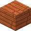
Planches d'acacia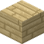
Planches de bouleau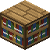
Bibliothèque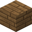
Planches de sapin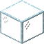
Verre Pierre lumineuse
Pierre lumineuse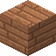
Planches de jungle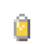
Lanterne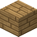
Planches de chêne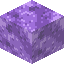
Portail d'essai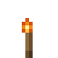
Torche
Nature
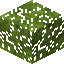
Feuilles d'acacia Bûche d'acacia
Bûche d'acacia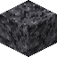
Socle Feuilles de bouleau
Feuilles de bouleau Bûche de bouleau
Bûche de bouleau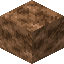
Bloc de champignon brun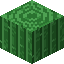
Cactus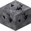
Minerai de charbon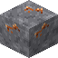
Minerai de cuivre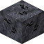
Minerai de charbon profond Minerai de cuivre profond
Minerai de cuivre profond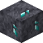
Minerai de diamant profond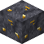
Minerai d'or profond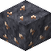
Minerai de fer profond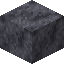
Roche profonde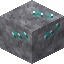
Minerai de diamant Terre
Terre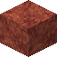
Roche ferrugineuse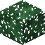
Aiguilles de sapin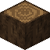
Bûche de sapin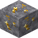
Minerai d'or Bloc d'herbe
Bloc d'herbe Gravier
Gravier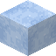
Glace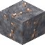
Minerai de fer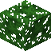
Feuilles de jungle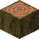
Bûche de jungle Boue
Boue Pied de champignon
Pied de champignon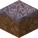
Mycélium Feuilles de chêne
Feuilles de chêne Bûche de chêne
Bûche de chêne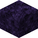
Obsidienne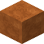
Terre cuite orange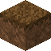
Podzol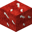
Bloc de champignon rouge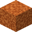
Sable rouge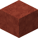
Terre cuite rouge Sable
Sable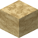
Grès Bloc de neige
Bloc de neige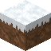
Bloc d'herbe enneigé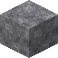
Pierre Terre cuite
Terre cuite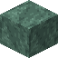
Roche vert-de-gris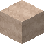
Terre cuite blanche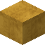
Terre cuite jaune